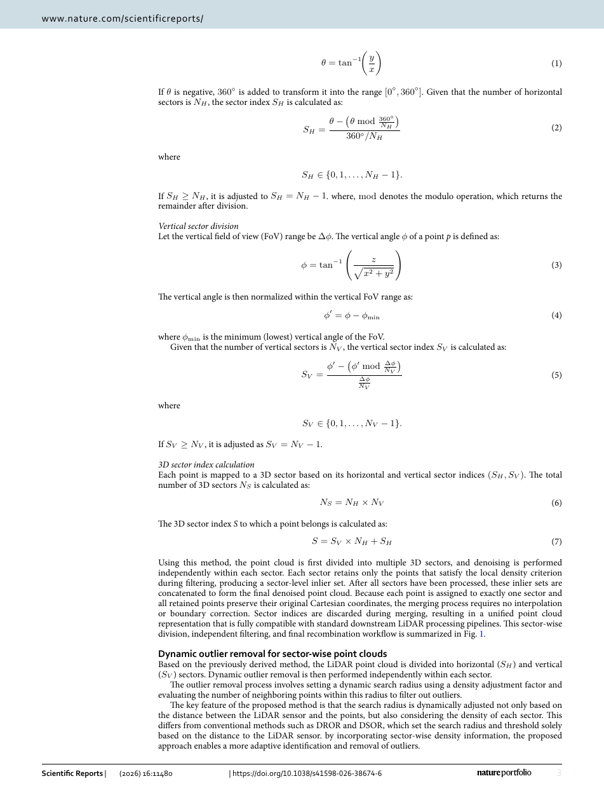
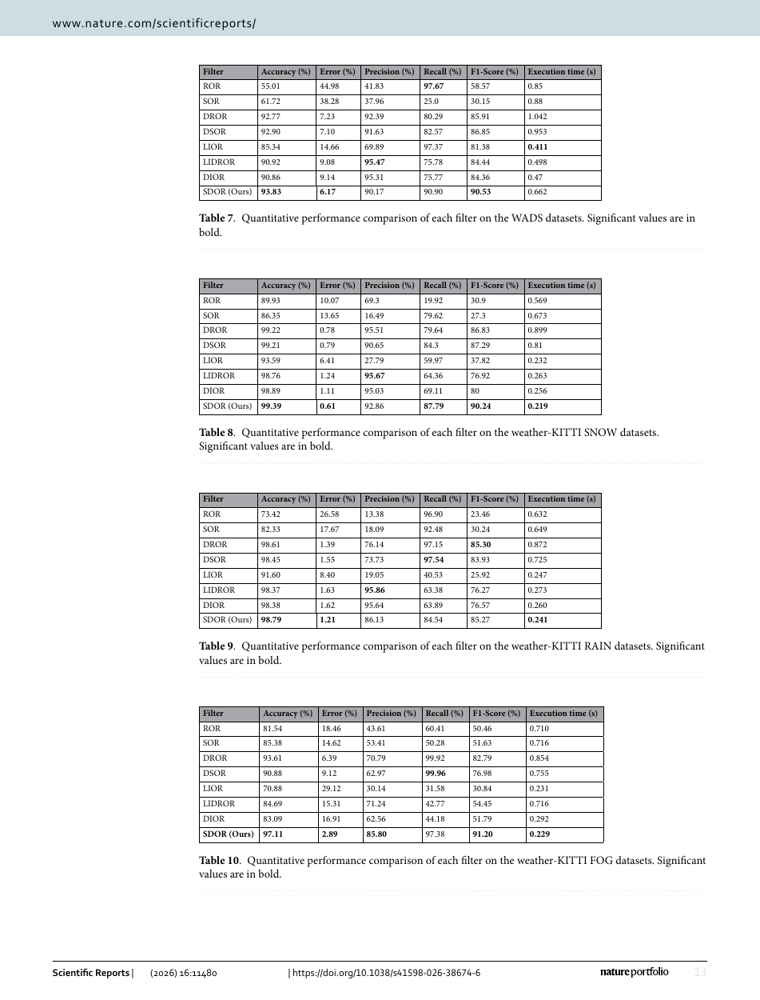

Robotics Research Reader · Stage 1
Spatially divided outlier removal for LiDAR de-noising in adverse weather conditions
材料覆盖范围：完整阅读当前 PDF 的摘要、正文、图表、实验、限制与结论，并视觉核对本页嵌入的关键原文页。原文件为
Spatially divided outlier removal for LiDAR de-noising in adverse weather conditions.pdf。本页严格限于 Stage 1：只还原论文故事线，不读取代码，不用第三方解读补写。一、论文一句话在做什么
概括SDOR 将点云按水平与垂直方向划成扇区，在各扇区内依据局部密度和距离自适应搜索半径并行执行离群点删除，目标是在雨、雪、雾中同时提高精度与速度。 （Abstract；Introduction；Method overview）
二、Research Problem
具体问题：恶劣天气点云中的天气噪声去除。 （Abstract；Introduction）
场景：自动驾驶 LiDAR 在雨、雪、雾条件下实时运行。 （Abstract；Introduction）
重要性：过滤器必须同时保证 precision、recall 与实时性。 （Abstract；Introduction）
后果：噪声和误删会削弱环境感知可靠性。 （Abstract；Introduction）
三、Existing Methods & Gap
| 方法类别 | 原本怎么解决 | 作者指出的不足及影响 |
|---|---|---|
| 距离滤波 ROR/SOR/DROR/DSOR | 依赖全局或距离相关邻域 | 全局处理开销大，且不能充分补偿局部密度不均。 |
| 强度滤波 LIOR/LIDROR/DIOR | 先按反射强度筛选候选点 | 固定强度阈值随天气和传感器变化，性能不稳定。 |
| 深度学习方法 | 从标注数据学习噪声类别 | 需要大量逐点标注并有较高计算成本。 |
概括作者认为真正缺少的是：需要大量逐点标注并有较高计算成本。 （Introduction；Related Work）
四、Core Observation / Insight
- LiDAR 点云密度不仅随距离变化，也在不同水平/垂直空间区域中显著不同。 （Introduction；Method）
- 互不重叠的扇区可独立执行同一过滤规则，天然适合多线程。 （Introduction；Method）
- 作者据此用扇区内局部密度归一化搜索半径，而非对整帧使用统一或仅距离相关的半径。 （Introduction；Method）
五、Method：只看宏观逻辑
概括Input：一帧 LiDAR 点云。 （Method；framework figure）
概括按方位角与高度划分 NH×NV 个 3D 扇区。 （Method；framework figure）
概括统计每个扇区的局部点密度；搜索半径同时随点到传感器距离和扇区密度调整。 （Method；framework figure）
概括各扇区并行执行邻居计数，并通过边界带机制缓解扇区边缘邻居缺失。 （Method；framework figure）
概括合并各扇区 inlier，Output：去噪点云。 （Method；framework figure）


概括相比已有方法，真正发生变化的核心位置是：统计每个扇区的局部点密度；搜索半径同时随点到传感器距离和扇区密度调整。 （Method）
六、Contributions
- System / Efficiency：提出空间划分与并行处理策略。 （Introduction，contributions）
- Method：提出基于扇区密度的自适应搜索半径。 （Introduction，contributions）
- Experiment：在 WADS 与 Weather-KITTI 的雪、雨、雾条件下验证精度、速度与稳定性。 （Introduction，contributions）
七、Experiments
- Dataset：WADS 与 Weather-KITTI（Snow/Rain/Fog）。 （Experimental setup）
- Baselines：ROR、SOR、DROR、DSOR、LIOR、LIDROR、DIOR。 （Experimental setup）
- Metrics：Accuracy、Error rate、Precision、Recall、F1、运行时间与帧间 CV。 （Experimental setup）
- 有参数、线程、边界区、定性、定量和复杂度分析。 （Experimental setup）
实验 1：WADS：SDOR F1=90.53%，error=6.17%，运行时间 0.662 s；论文称其给出最均衡的精度–速度折中。 （Experiments；相关 Figure/Table）
实验 2：Weather-KITTI Snow/Fog：F1 分别为 90.24%/91.20%，运行时间 0.219/0.229 s，均为所列方法最佳或最快。 （Experiments；相关 Figure/Table）
实验 3：Weather-KITTI Rain：SDOR F1=85.27%，与 DROR 的 85.30% 接近，但 SDOR 运行时间 0.241 s，明显低于 DROR 的 0.872 s。 （Experiments；相关 Figure/Table）
实验 4：多线程相对单线程约减少 64% 时间；F1 的 CV=0.012，为所比较五种代表过滤器最低。 （Experiments；相关 Figure/Table）
实验 5：直接观察边界带 F1 从内部区 92.53% 降至 90.70%，显示扇区边界仍影响半径估计。 （Experiments；相关 Figure/Table）
八、Limitations
作者明确承认的 limitation
作者明确承认：扇区边界存在性能变化；分区过细会产生稀疏扇区和线程管理开销。 （Discussion / Conclusion / failure case）
从实验结果中直接可见，但作者没有明确称为 limitation 的现象
直接观察直接观察：Rain 上 SDOR 的 F1 略低于 DROR；不同数据集的绝对运行时间和优势并不完全一致。 （相关 Figure/Table）
九、Future Work / Research Implications
作者提出 soft-overlap 扇区、融合强度的混合半径策略，以及面向极端雾和剧烈密度波动的连续密度场补偿。 （Conclusion）
十、论文逻辑链
概括现实问题：雨雪雾噪声要求高精度、实时过滤。
概括现有方法：全局距离/强度阈值或深度网络。
概括不足：难同时适应局部密度、速度与跨天气变化。
概括观察：密度在空间扇区中不均，而扇区可独立处理。
概括思想：分区估计密度并并行过滤。
概括方法：扇区划分 + 密度/距离自适应半径 + 边界带。
概括验证：WADS/Weather-KITTI 多天气、参数和线程实验。
概括结论：作者认为 SDOR 在精度、稳定性和速度间最均衡。
十一、第一遍阅读结束后，我应该记住的东西
- 概括解决恶劣天气 LiDAR 离群点过滤的精度与实时性冲突。
- 概括核心 gap 是全局/仅距离相关阈值不能反映局部密度。
- 概括最关键 insight 是空间分区既提供局部密度尺度，也提供并行单元。
- 概括核心变化是扇区级密度归一化自适应半径。
- 概括最重要结果是雪/雾 F1 超过 90%，并在 Weather-KITTI 上达到约 0.22–0.24 s。
十二、暂时不要深入的内容
- 概括扇区编号和自适应半径公式（Methods, Eq. 1–8）。
- 概括边界带复制与合并规则（Algorithm 1）。
- 概括NH/NV、λ、kmin 的参数热图（Figs. 3–5；Tables 3–6）。
- 概括复杂度与线程实现口径（Tables 11–12）。